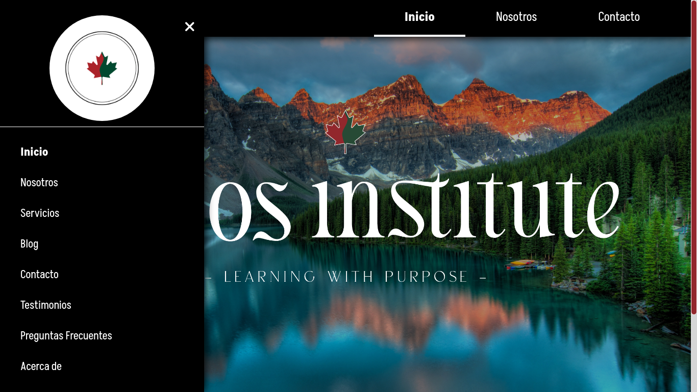
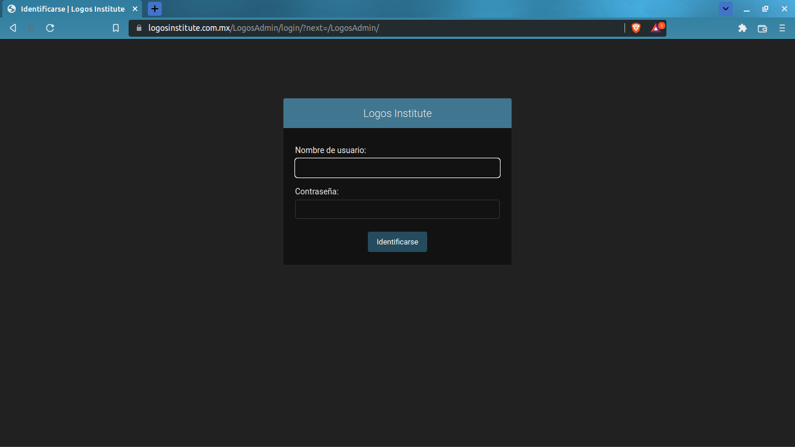
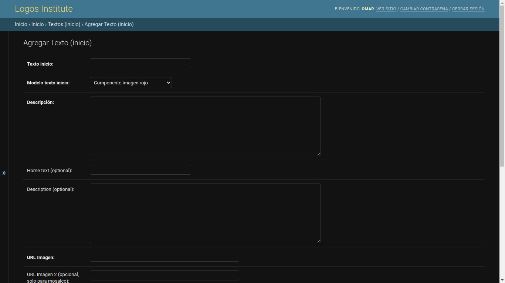
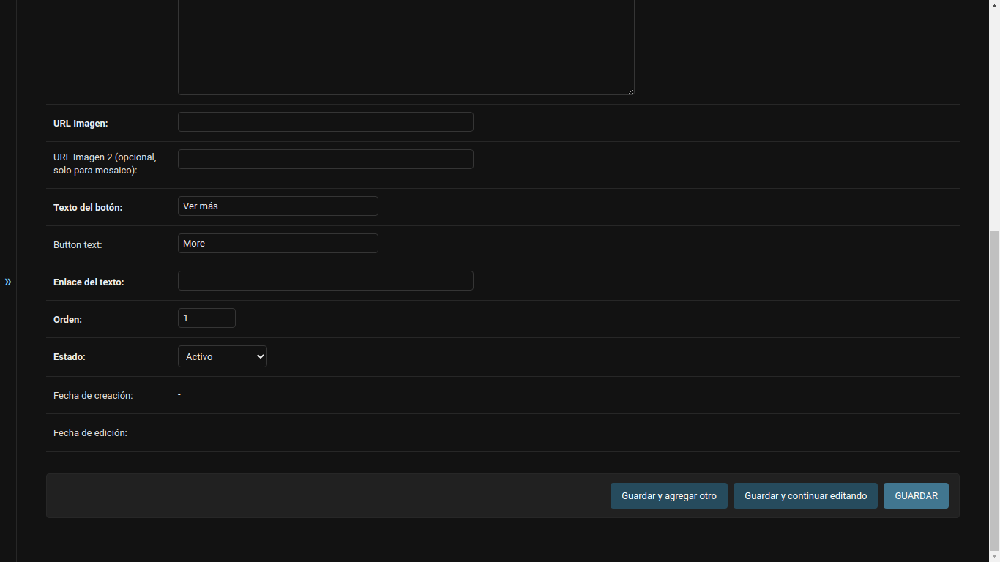
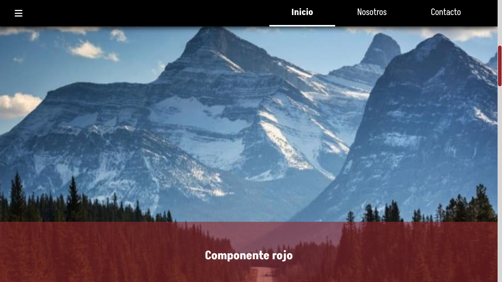
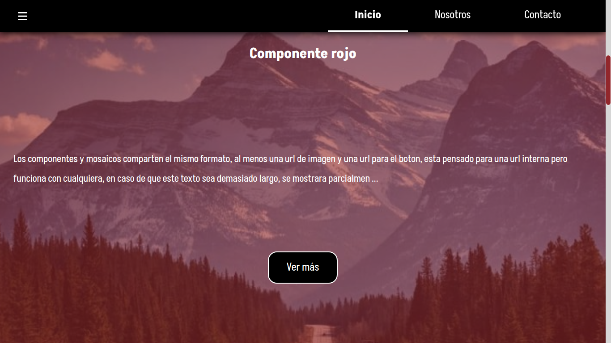
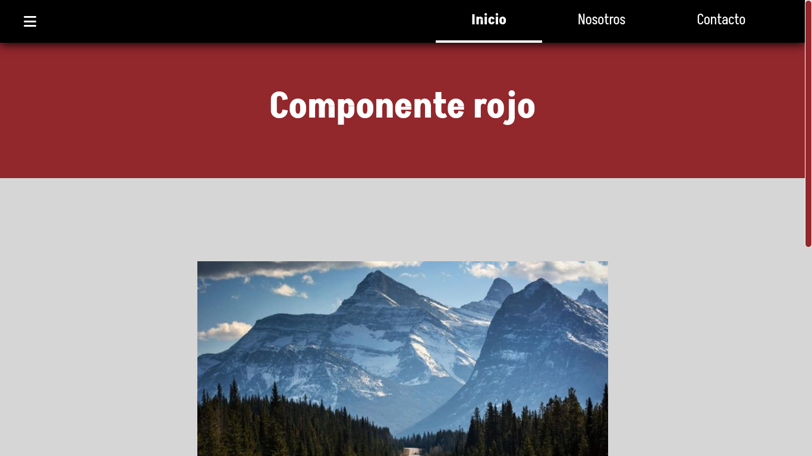
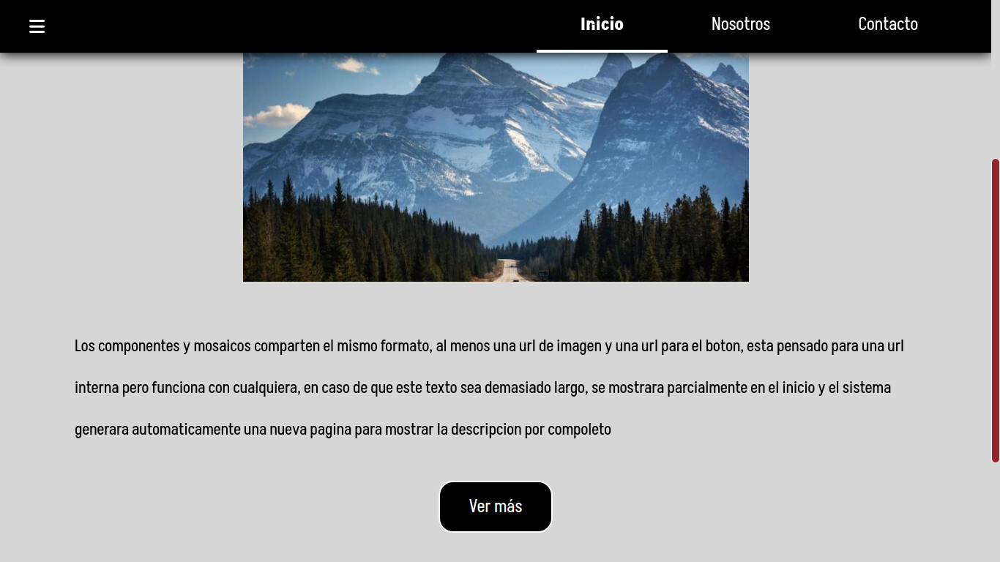

Manual
Manual
Manual de usuario para la web de Logos Institute MX
Bienvenidos a la página del manual de la web de Logos Institute MX, aquí se publicarán las actualizaciones sobre el diseño y funcionamiento de la web. Cualquier error o sugerencia favor de reportar al contacto omardanielesquivel@gmail.com para una respuesta lo más rápida posible.
General
El menú de la versión de escritorio se encuetra en la parte superior, para dispositivos móviles el menu tiene un cambio ligero, pero se conserva la posición, la barra de menú se esconde con el scroll con dirección abajo y se muestra de nuevo con el scroll con dirección arriba o una vez que se llegue hasta la parte superior de la página.
En el caso del menú de escritorio, este cuenta con una barra lateral que contiene el menu completo, para salir de él debe darse un click al ícono de la x, también se puede presionar la tecla ESC o dar un click fuera del menú. Lo mismo aplica para los menús de las versiones móiles.
Hay 3 páginas principales que corresponden a las mostradas en la barra superior del menú de escritorio, Inicio, Nosotros y Contacto, estas páginas se resaltaran con un subrayado o con texto en negrita en los menús.
Url's
La mayoría de las urls se generan de manera automática y se vinculan entre si dentro de la web principal, pero algunas de ellas son independientes, como es el caso del administrador y el manual. En varias secciones de la web, después de ingresar una url, el sistema la cambiará, como puede apreciarse en la imagen para el caso del administrador.
Para ingresar al administrador, debe añadirse /LogosAdmin al final de la url https://logosinstitute.com.mx, osea ingresar la url https://logosinstitute.com.mx/LogosAdmin, de manera similar para el manual debe ingresarse /LogosReadMe para poder ingresar la url https://logosinstitute.com.mx/LogosReadMe. En ambos casos deben respetarse la disposición de mayúsculas y minúsculas.
Finalmente, si se desea compartir el link de la web, este puedes escribirse simplemente como logosinstitute.com.mx, también es posible compartir el link www.logosinstitute.com.mx, pero en este caso, para evitar errores con las distintas configuraciones de los navegadores, se debe anteponer el prefijo https:// dicho de otra manera, si se desea visualizar www en el dominio, este debe ser compartido como https://www.logosinstitute.com.mx
Inicio
En la sección de Incio se usan distintos componentes para presentar la informacíon general de la web, esta puede hacer referencia a links internos, como por ejemplo a nuevos servicios o a links externos. Antes de leer la descripción de los componentes de texto del inicio se recomienda leer la descripción general de los componentes de texto de inicio, da un click aqui para leer más.
Textos de Inicio (descripción general)
En las imágenes se puden observar múltiples campos correspondientes a un Texto Inicio, se pueden observar 2 principales tipos de campos, los campos con letras blancas normales y los campos con letras blancas remarcadas, estos últimos son obligatorios y los primeros opcionales.
Los textos de inicio contienen 4 elementos principales, los cuales son, un título (llamado Texto Inicio dentro del administrador), una descripción, la url de una imagen y un enlace (este puede ser un link interno o externo), estos son obligatorios dentro del administrador y por eso se remarcan
Una breve descripción de cada campo es la siguiente
- Texto inicio
Este campo corresponde al título del componente, este debe ser descriptivo y preferentemente corto, ya que dependiendo del modelo del componente, este será visible para los visitantes de la web. Un ejemplo de este puede ser un encabezado como "Tenemos nuevos cursos", o "Ve a nuestro nuevo post sobre migración"
- Modelo texto inicio
Este campo tiene el valor predeterminado componente imagen rojo. Los valores de este campo se dividen en dos principlaes conjuntos. El primero corresponde a los componentes imagen y mosaico, y el segundo corresponde a los sliders, videos y textos. La diferencia principal entre estos conjuntos corresponde a la descripción, en el primer conjunto, estos necesitan de una descripción literal, en el segundo, estos necesitan de una descripción especial, en secciones posteriores se verán mas detalles acerca de los componentes.
- Descripción
La descripción es quiza el campo más importante, como se describió en el punto anterior, esta debe ser una descripción literal para algunos componentes y una descripción especial para el resto. Si esta es demasiado larga, el sistema generará una nueva página para poder visualizarla por completo.
- Home Text
Este campo es opcional y corresponde a la versión en inglés del campo Texto inicio, este campo está pensado para la futura traducción del sitio.
- Description
Este campo es opcional y corresponde a la versión en inglés del campo Descripción, este campo está pensado para la futura traducción del sitio.
- Url imagen
Este campo es obligatorio, es importante que la url corresponda a la url de una imagen vigente ya que de lo contrario se generará un error de visualización, aunque sea un campo obligatorio, no en todos los componentes se visualizará esta imagen.
- Url imagen 2
Es un campo opcional, pensado para mejorar la apariencia del componente mosaico, en caso de no estar presente, el componente mosaico repetirá la Url imagen del campo anterior.
- Texto del botón
Este campo tiene un valor predeterminado correspondiente a Ver más, este puede cambiarse dependiendo la tematica del componente.
- Button text
Este campo es opcional y corresponde a la versión en inglés del campo Texto del botón, este campo está pensado para la futura traducción del sitio.
- Enlace del texto
En este campo debe ingresarse una url válida, que apunte a una página interna de la web o a una web externa, esta url se visitará al dar click en el botón del componente (solo para los componentes que lo muestren)
- Orden
Este campo determina el orden de aparición (arriba-abajo) al momento de visualizarse en el inicio, solo aplica para componentes activos, si dos componentes tienen el mismo orden, estos de ordenarán alfabéticamente segun el campo Texto inicio.
- Estado
Si este campo tiene el valor Activo, el componente se visualizará en el incio, en caso contrario será archivado, visible solo en el administrador.
- Fecha de creación
Indica la fecha de creación, este campo de llena de manera automática y es solo de visualización.
- Fecha de edición
Indica la fecha de la última edición, este campo de llena de manera automática y es solo de visualización.
Los componentes son los siguientes:
Componentes de 1 color
Los componentes de 1 color corresponden a 3 tipos de Texto inicio, los cuales tienen un valor componente imagen rojo, componente imagen verde, componente imagen verde claro en el campo Modelo texto inicio. Estos 3 componentes son equivalentes, sólo cambian en el color de fondo del texto y se visualizan así
El texto se muestra al poner el cursor sobre el componente, en la segunda imagen se visualizan los campos Texto inicio, descripción y Texto del botón, al dar click en el boton, el navegador visitará la web que se introdujo en el campo Enlace del texto, la imagen de fondo es la imagen correspondiente a la url del campo Url Imagen. Si la descripción es demasiado grande, esta podrá ser visualizada por completo al dar click en ella, como se muestra en las siguientes imágenes.
